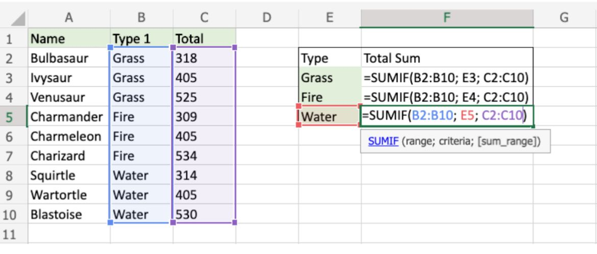
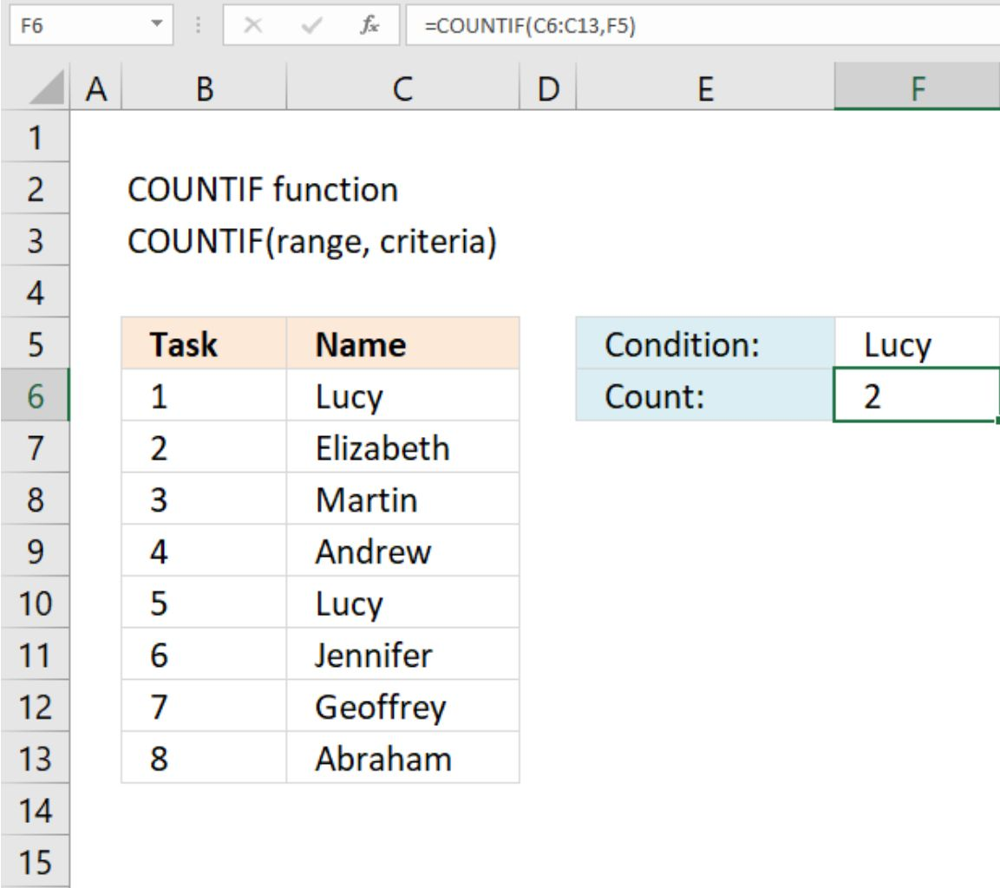

How to implement these formulas effectively for SUMIF and COUNTIF.

The SUMIF function is used to add numbers from a list, but only if they meet a certain condition.
In this example, the goal is to find the total points for each Pokémon type like Grass, Fire, and Water. The formula checks the “Type 1” column to see which rows match the type (like “Grass”) and then adds the matching values from the “Total” column. For example, if a Pokémon is “Grass” type, its total points get added to the Grass total. The formula looks like this: =SUMIF(B2:B10, E3, C2:C10), where it checks column B for the type, takes the condition from E3, and adds up the numbers from column C. The same formula is used for Fire and Water, just changing the condition.

The COUNTIF function in Google Sheets is used to count how many times a specific value appears in a selected group of cells. The formula is written as =COUNTIF(range, criteria), where the range is the group of cells you’re checking, and the criteria is what you’re looking for.
For this example, you want to count how many times the name “Lucy” appears in a list of names from C6 to C13, you’d use =COUNTIF(C6:C13, F5), assuming cell F5 has “Lucy.” In this case, the result would be 2 because “Lucy” appears twice in that list.